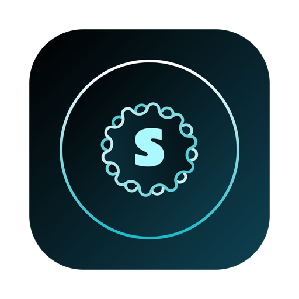

Mac, iPad & iPhone · On deviceType a topic. Scenefy writes the script, builds the scenes, narrates them, and renders an MP4 you can post — then turns the same project into a quiz, a handout, a podcast, or a reading chapter. Every word of it is generated on your own device.
Four steps, and only the first one needs you. Everything after it is a decision you can override rather than work you have to do.
Pick a format, then give Scenefy a topic, an audience, and a length. That's the whole brief — three fields on one screen.
Apple Intelligence drafts the script scene by scene on your device: a hook, the content beats, and a close, each with its own narration text.
Scenes get a layout, a theme, timing, transitions, and a synthesized voice track. The preview plays immediately — no rendering wait to see what you have.
Change any word, swap a layout, re-record a line, apply your brand — then render an MP4, or a PDF, quiz, audio file, or all of them at once.
The heart of the app. Choose from more than thirty-five ready formats, and Scenefy builds a complete multi-scene production around your topic — not a single clip, but a structured video with a beginning, a middle, and an end.
Explainers, fact reels, breaking-news cards, announcements, listicles, myth-busters, interview prep, FAQs, quizzes, exams, and more — each with a layout designed for that kind of content rather than one template wearing different colors.
Every scene is a typed object — a title card, a question, a reveal, a stat, a quote, a call to action. Scenefy picks the right type for each beat of your script, so a question scene really behaves like one, with its own countdown and answer reveal.
Widescreen 16:9, vertical 9:16, square 1:1, and portrait 4:5 all render from the same project. Layouts are designed per ratio, so a vertical cut is composed for vertical, not cropped from the widescreen version.
A full set of tools for anyone who has to explain something to someone else — teachers, trainers, students, and course creators.
Give it a topic and a difficulty level and it writes a book-chapter-style lesson — proper prose, headings, callouts, and LaTeX math rendered as real equations. You read it in the app with notes, highlights, and bookmarks, then export the chapter as a PDF or a styled HTML page.
Generates an interactive test with a countdown timer and a live score report at the end. Set the difficulty tier and question count, or import your own question bank from a CSV file and let Scenefy build the test around your questions.
Lesson plans, worksheets, discussion prompts, assessments, and rubrics, generated against a curriculum standard and learning goals you specify. Everything stays a normal editable document you can refine, and a saved resource library keeps it all in one place.
Hear a word, say it back, and get instant pronunciation feedback scored on device. No video, no export — just focused practice for language learners.
Record a lecture or import an existing recording, and Scenefy turns the audio into reading chapters, a quiz, or a set of flashcards — the notes you meant to take, written for you.
Question timing is real, not decorative: your countdown is preserved through compilation, reveal scenes are paired to their questions, and exams keep score. Export the quiz as a standalone HTML page anyone can open in a browser.
For the times you're making something to be watched rather than studied.
Five proven hook formats — Mind Hacks, Hidden Truth, The 1% Rule, Brain Game, Untold Story — built for vertical feeds. Pick the angle, give it a subject, and get a punchy short with a hook, payoff, and end card.
Type a topic and watch a short illustrated, narrated, animated story that Scenefy writes on the spot — made for young audiences and curious minds.
Turn a photo, a screenshot, or a blank canvas into something worth sharing, with layout and caption options built for the format.
Type or dictate an idea and get a clean video draft — or the same story retold in a narrator's voice you choose.
Platform-ready posts and replies, or a visually rich three-minute social video, written for the tone of the place you're posting it.
A live assistant that watches your timeline and suggests scene rewrites, pacing fixes, and B-roll ideas as you edit — a second opinion that never leaves your device.
Narration is generated with Apple Speech voices in multiple languages — or you can simply use your own.
Record narration per scene, trim it visually, re-record a line you fluffed, and let Scenefy transcribe it into on-screen text — your own voice, in your own timing.
Name two hosts, pick a voice for each, and Scenefy writes the conversation and performs it — a two-speaker episode with distinct voices, exported as an audio file.
Type text or generate it with AI, choose a voice, and export straight to an audio file. Useful when the deliverable was never a video in the first place.
Read long scripts at your own pace while recording, on camera or audio-only, with speed and size controls that stay out of the way.
Record or import audio, trim and clean it up, mix in music, and export. A small, focused editor rather than a second app to learn.
Record with your camera while reading an on-screen teleprompter — the piece to camera that usually takes fifteen takes, in about three.
Not every project starts with a blank page. Scenefy can take a document, a link, or a video as its starting point.
Capture pages with the camera, or choose a PDF or image, and Scenefy reads the text and produces a narrated video, a reading chapter, and a quiz from it.
Paste a link. Scenefy extracts the article's main content — not the navigation and cookie banners — and turns it into a saved PDF, a reading chapter, or a video.
Upload your own video and pin question cards to any moment while it plays, turning a flat recording into something a viewer has to answer.
A generated video that looks generated is worth very little. Scenefy is built so the output carries your identity, not the app's.
Save your colors, gradient, logo, and standard calls to action once. Applying it rewrites the theme, background, watermark, and end cards across every scene in a project in a single action — and it applies to new projects automatically.
Each scene type offers several layouts, and themes control type, color, and motion together. Change one scene or restyle the whole video.
Drop in a scannable QR scene pointing anywhere you like, and top-and-tail the video with a short branded sting.
The reason to finish a project in Scenefy rather than a video editor: the same timeline becomes a dozen different files, none of which you have to rebuild by hand.
Every generation runs locally through Apple Intelligence. Your topics, scripts, and projects never leave the device — there is no server to sign in to and no usage data to hand over.
Script writing, narration, quiz generation, and scene suggestions all happen on your own hardware. We collect no analytics and no usage data — we don't know what you're making.
No sign-in, no API key, and no subscription to a third-party AI service just to open the app. Nothing to leak, because nothing is stored anywhere but your device.
Generation and every export work with the network switched off. Only URL Import needs a connection, and it talks solely to the address you pasted.
Scenefy opens with 15 days of unrestricted access. After that, it keeps working.
macOS 26 or later, iPadOS 26 or later, or iOS 26 or later. AI generation additionally requires a device that supports Apple Intelligence, with Apple Intelligence enabled and its on-device models ready. Editing, branding, preview, and export work regardless.
We answer every email, usually within two business days.
apps.damu@gmail.com